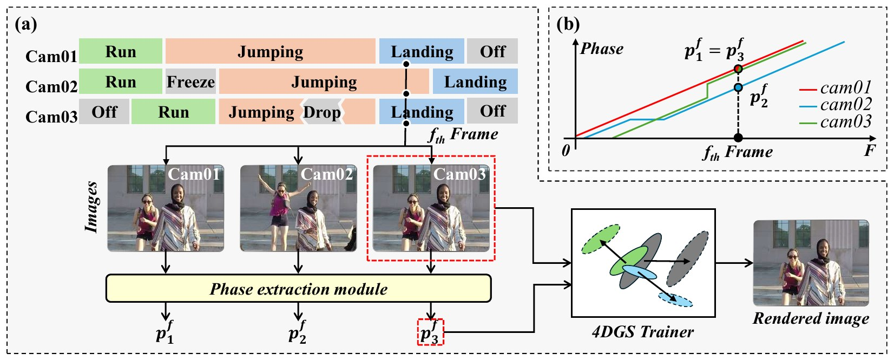
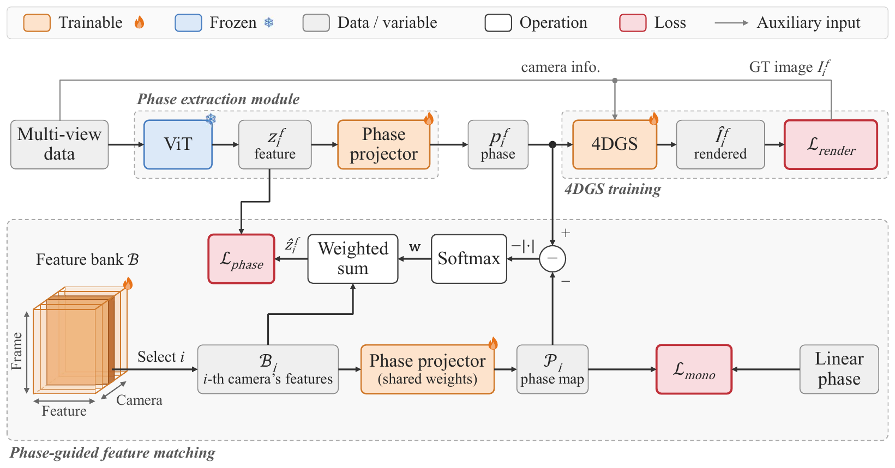
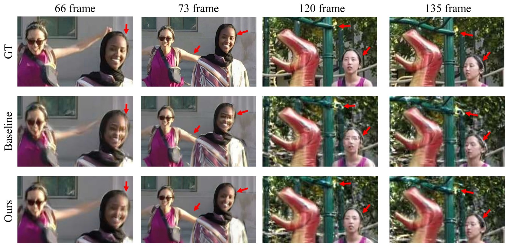
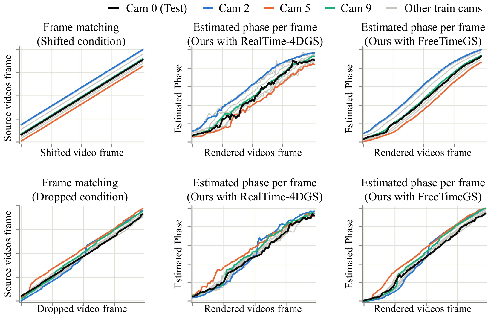

1Electronics and Telecommunications Research Institute (ETRI) 2Seoul National University
†Co-corresponding authors
Left: the 4DGS backbone trained with the raw timestamps. Middle: Phase-DGS with the same backbone, with frames played in order of their estimated phase. Right: the estimated phase of each test frame (blue) against a linear 0→1 reference (red). Top: RealTime-4DGS. Bottom: FreeTimeGS.

Spatiotemporal scene reconstruction with Dynamic Gaussian Splatting (DGS) fundamentally depends on perfect temporal synchronization across all cameras, an assumption rarely achievable in practice. Industry-standard synchronization requires expensive specialized hardware and complex setup, while data-driven alternatives including audio-based alignment, geometry matching, and pose tracking remain limited by restrictive environmental or scene-specific assumptions. To overcome these limitations, we propose Phase-DGS, a framework that replaces conventional timestamps with a semantic phase representing each frame's inherent state within the underlying motion cycle. Frames capturing the same motion state share the same phase regardless of which camera records them or when, naturally establishing spatiotemporal correspondence across unsynchronized cameras. We validate Phase-DGS under temporal offsets, frame drops, and camera freezes, achieving up to +8.5 dB PSNR improvement over baselines while enabling seamless integration with existing DGS backbones including RealTime-4DGS and FreeTimeGS.

A frozen DINOv2 encoder and a lightweight MLP predict a phase in [0, 1] from the content of each frame, without any phase labels.
Per-camera reference features, optimized with the projector, keep the same motion state at the same phase across all views.
The phase simply replaces the timestamp t, so existing backbones such as RealTime-4DGS and FreeTimeGS train without modification.
Average PSNR (dB) on SelfCap and the Nvidia Dynamic Scene dataset under synchronized (Synced) and simulated unsynchronized (Shifted, Dropped) conditions.
| Condition | Method | SelfCap | Nvidia |
|---|---|---|---|
| Synced | Sync-NeRF | – | 28.889 |
| RealTime-4DGS | 30.858 | 29.735 | |
| Ours (RealTime-4DGS) | 32.145 | 28.938 | |
| FreeTimeGS | 34.181 | 31.167 | |
| VisualSync + FreeTimeGS | 33.446 | 30.429 | |
| Ours (FreeTimeGS) | 34.727 | 30.416 | |
| Shifted | Sync-NeRF | – | 28.492 |
| RealTime-4DGS | 27.614 | 23.083 | |
| Ours (RealTime-4DGS) | 28.288 | 26.655 | |
| FreeTimeGS | 27.170 | 23.785 | |
| VisualSync + FreeTimeGS | 29.611 | 27.958 | |
| Ours (FreeTimeGS) | 32.947 | 29.836 | |
| Dropped | Sync-NeRF | – | 26.683 |
| RealTime-4DGS | 26.679 | 25.547 | |
| Ours (RealTime-4DGS) | 29.638 | 28.263 | |
| FreeTimeGS | 27.894 | 25.313 | |
| VisualSync + FreeTimeGS | 29.739 | 28.057 | |
| Ours (FreeTimeGS) | 34.379 | 30.665 |
Shifted: 20–30 frame offsets per camera. Dropped: 10% random frame drops and 5–10 frame freezes, independent per camera. See the paper for SSIM, LPIPS and per-scene results.


@inproceedings{jeon2026phasedgs,
title = {Phase-DGS: Phase-guided Dynamic Gaussian Splatting
from Unsynchronized Multi-view Video},
author = {Jeon, Hosung and Jeong, Jun Young and Kwak, Sangwoon and
Kim, Joonsoo and Kim, Sangmin and Park, Jaesik and
Cheong, Won-Sik and Choo, Hyon-Gon},
booktitle = {Advances in Neural Information Processing Systems (NeurIPS)},
year = {2026}
}